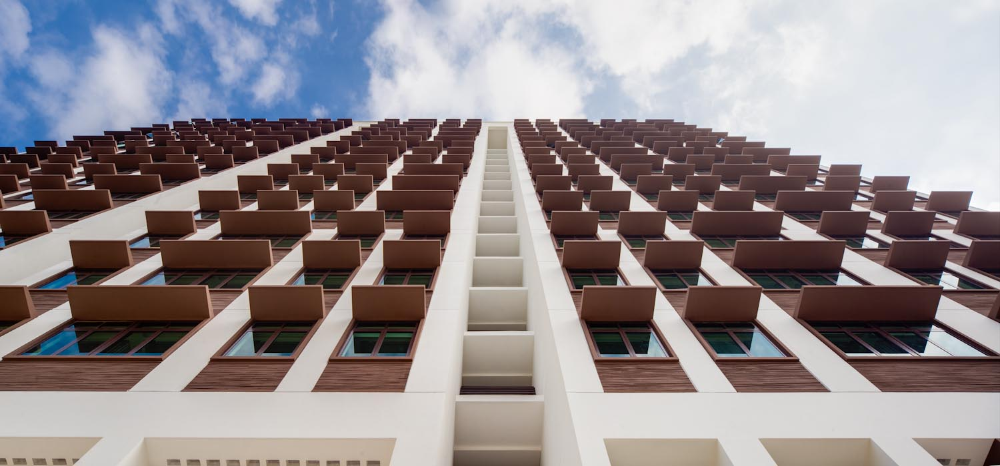

To be a learning community that is passionate about active citizenship and community engagement.
Founded in 2012, the College of Alice & Peter Tan (CAPT) is a Residential College made up of undergraduate students, faculty and administrative staff at the National University of Singapore. Together with three other residential colleges, CAPT is located within University Town and within close proximity to the wide range of learning, sports and performing arts facilities.
College of Alice & Peter Tan is distinguished by its vision of students engage with the community within and outside of NUS, and encouraging them to apply their knowledge to address issues that are important to society. The College consciously weaves this theme of active citizenship and community engagement through its curriculum and other aspects of the student experience.

University Town College Programme (UTCP) curriculum at CAPT is designed to help students become critical thinkers, articulate communicators, and individuals who can deal with complexity and uncertainty. In addition, through various informal learning activities, students have the opportunity to acquire a greater awareness of the diverse communities around us, develop empathy, leadership and organisational skills, and cultivate an informed view of issues relevant to society.
We believe that active citizenship in the context of an educational institution is fundamentally about being equipped for participation in society. Our hope is that the outcome of this living-learning programme will be the shaping of knowledge, skills and values needed to make a difference, and that ultimately our students will apply them when they graduate to work across a wide range of careers and professions.